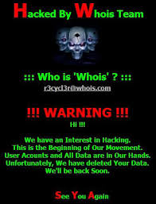
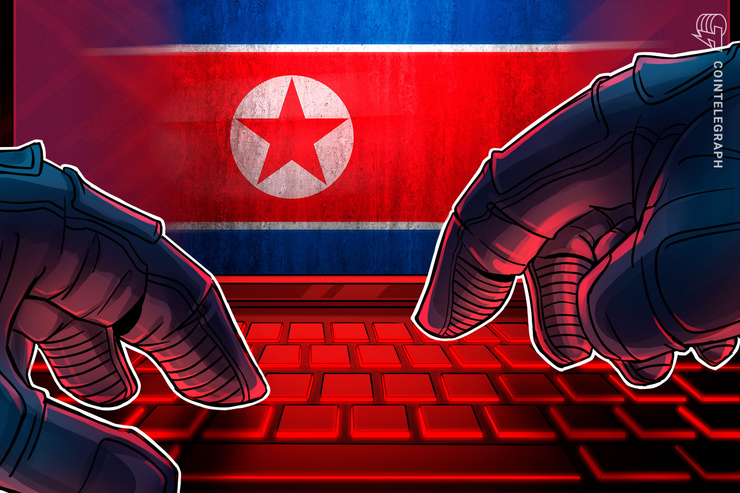

Largest Cyber Attacks
Adobe
On October 3, Adobe revealed that it had been the victim of an attack that exposed Adobe customer IDs and encrypted passwords. At the time, the company said that hackers gained access to encrypted credit card records and login information for around 3 million users. But the number of affected accounts has turned out to be much higher. The attack actually involved 38 million active accounts.
Sony
On November 24, 2014, a hacker group which identified itself by the name "Guardians of Peace" leaked a release of confidential data from the film studio Sony Pictures. The data included personal information about Sony Pictures employees and their families, e-mails between employees, information about executive salaries at the company, copies of then-unreleased Sony films, plans for future Sony films, scripts for certain films, and other information. The perpetrators then employed a variant of the Shamoon wiper malware to erase Sony's computer infrastructure.
During the hack, the group demanded that Sony withdraw its then-upcoming film The Interview, a comedy about a plot to assassinate North Korean leader Kim Jong-un, and threatened terrorist attacks at cinemas screening the film. After many major U.S. cinema chains opted not to screen The Interview in response to these threats, Sony elected to cancel the film's formal premiere and mainstream release, opting to skip directly to a downloadable digital release followed by a limited theatrical release the next day.
South Korea
-

On 20 March 2013, three South Korean television stations and a bank suffered from frozen computer terminals in a suspected act of cyberwarfare. ATMs and mobile payments were also affected. The South Korean communications watchdog, the Korea Communications Commission, raised their alert level on cyber-attacks to three on a scale of five. North Korea has been blamed for similar attacks in 2009 and 2011 and was suspected of launching this attack as well. This attack also came at a period of elevated tensions between the two Koreas, following Pyongyang’s nuclear test on 12 February. South Korean officials linked the incident to a Chinese IP address, which increased suspicion of North Korea as "intelligence experts believe that North Korea routinely uses Chinese computer addresses to hide its cyber-attacks."
-

The attacks on all six organizations derived from one single entity. The networks were attacked by malicious codes, rather than distributed denial-of-service (DDoS) attacks as suspected at the beginning. It appeared to have used only hard drive overwrites. This cyberattack “damaged 32,000 computers and servers of media and financial companies.” The Financial Services Commission of South Korea said that Shinhan Bank reported that its Internet banking servers had been temporarily blocked and that Jeju Bank [ko] and NongHyup reported that operations at some of their branches had been paralyzed after computers were infected with viruses and their files erased. Woori Bank reported a hacking attack, but said it had suffered no damage. Computer shutdowns also hit companies including the Korean Broadcasting System, Munhwa Broadcasting Corporation, and YTN.
-

While multiple attacks were organized by multiple perpetrators, one of the distributed denial-of-service (DDoS) attacks against the South Korean government websites were directly linked to the “DarkSeoul” gang and Trojan.Castov. Malware related to the attack is called "DarkSeoul" in the computer world and was first identified in 2012. It has contributed to multiple previous high-profile attacks against South Korea. This hacking further speculated that North Korea was responsible for the attacks. It was told by investigators that “an IP address used in the attack matched one used in previous hacking attempts by Pyongyang.” Park Jae-moon, a former director-general at the Ministry of Science, ICT and Future Planning said, “82 malignant codes [collected from the damaged devices] and internet addresses used for the attack, as well as the North Korea's previous hacking patterns," proved that "the hacking methods were the same" as those used in the 20 March cyber attacks.
Yahoo
The Internet service company Yahoo! reported two major data breaches of user account data to hackers during the second half of 2016. The first announced breach, reported in September 2016, had occurred sometime in late 2014, and affected over 500 million Yahoo! user accounts. A separate data breach, occurring earlier around August 2013, was reported in December 2016. Initially believed to have affected over 1 billion user accounts, Yahoo! later affirmed in October 2017 that all 3 billion of its user accounts were impacted. Both breaches are considered the largest discovered in the history of the Internet. Specific details of material taken include names, email addresses, telephone numbers, encrypted or unencrypted security questions and answers, dates of birth, and hashed passwords. Further, Yahoo! reported that the late 2014 breach likely used manufactured web cookies to falsify login credentials, allowing hackers to gain access to any account without a password. Yahoo! has been criticized for their late disclosure of the breaches and their security measures, and is currently facing several lawsuits as well as investigation by members of the United States Congress. The breaches have impacted Verizon Communications's July 2016 plans to acquire Yahoo! for about $4.8 billion, which resulted in a decrease of $350 million in the final price on the deal closed in June 2017.